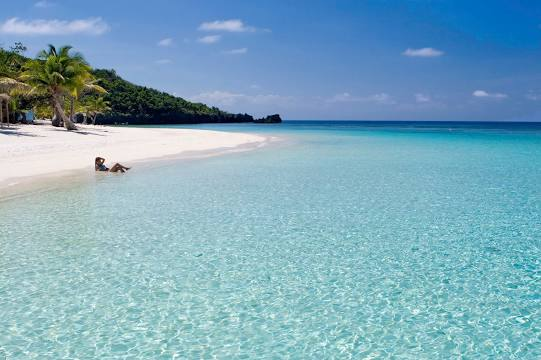
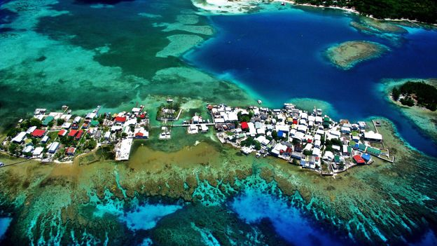
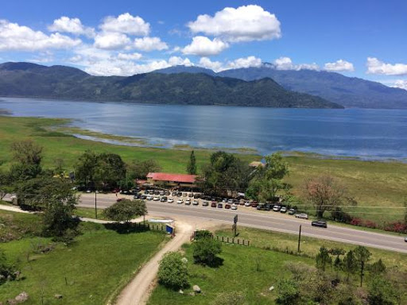

Datos principales:
Extension territorial: 112 492 km²
Moneda: Lempira
Forma de gobierno: Republica presidencialista
Censo (2020): 9 368 926 hab.
Independencia declarada en: 15 de septiembre de 1821 (199 años)
Extension territorial: 112 492 km²
Moneda: Lempira
Forma de gobierno: Republica presidencialista
Censo (2020): 9 368 926 hab.
Independencia declarada en: 15 de septiembre de 1821 (199 años)
Es la capital y sede de gobierno de la República de Honduras. Es una de las ciudades más pobladas de América Central.
El territorio que corresponde a la actual Honduras fue hogar de la civilización maya durante el primer milenio de nuestra era, como lo testimonian las ruinas de Copán. Fue invadido después por los Aztecas y a continuación por los Mosquitos.
En 1502, la región fue descubierta por Cristóbal Colón. La población indígena fue entonces diezmada por la conquista española y por las enfermedades que trajeron los colonos. Sin embargo, muy pronto los pueblos se mezclaron y los mestizos llegaron a ser el grupo étnico dominante de Honduras.
En 1523, Hernán Cortés, en el curso de una expedición punitiva contra soldados rebeldes, comenzó la conquista del territorio. El descubrimiento de oro en el país fue, sin embargo, el origen de intrigas y conflictos durante varios años. Fue el lugarteniente de Cortés en Guatemala, Pedro de Alvarado, quien venció finalmente a todos sus rivales, en 1539.
En 1540, los españoles hicieron de Comayagua la capital de su colonia. Otras comunidades españolas se instalaron en los valles de Honduras donde permanecieron muy aisladas.
Al final del período colonial, la mayor parte de Honduras era una provincia poco poblada, unida a la capitanería general de Guatemala, bajo administración española, y donde la mayoría de los habitantes se dedicaban a la agricultura o a la ganadería para subsistencia. El país, después de haber provisto esencialmente metales, procuró grandes cantidades de productos alimentarios y ganado a las regiones exportadoras de índigo de El Salvador y Guatemala.
De 1821 a 1823, la región integró el imperio mexicano de Iturbide, antes de ser incorporada a las Provincias Unidas de América Central, entre 1824 y 1838.
Independiente en 1838, Honduras perteneció, entre 1842 y 1844, a una confederación que agrupaba El Salvador y Nicaragua, e hizo de Francisco Morazán su primer presidente. Guatemala y otros paises vecinos más poderosos ejercieron, sin embargo, una gran influencia en la política de Honduras a lo largo de todo el siglo XIX. De 1840 hasta los años '70, el país fue frecuentemente dirigido por dictaduras conservadoras. Las elecciones tenían poca significación y las revoluciones fueron frecuentes.
A fines del siglo XIX y comienzos del XX, el estado fue dominado por dictadores liberales, como Marcos A. Soto, en 1876.
En el transcurso del siglo XX, la importancia creciente de las plantaciones de bananeros pusieron al país bajo la dominación de las compañías fruteras norteamericanas, tales como United, Standard y Cuyamel. La United Fruit Company compró Cuyamel, en 1929, e hizo de Honduras una "república bananera". Aún cuando ellas contribuyeron poco al desarrollo general del país, las compañías fruteras le dieron un producto de exportación mayor, desarrollaron las zonas portuarias del Caribe e hicieron, indirectamente, de San Pedro Sula, una zona de población importante.
En 1933, Tiburcio Carías Andino, sostenido por la United Fruit Company, llegó al poder y ejerció una dictadura enérgica hasta 1948. Juan Manuel Gálvez le sucedió y emprendió la modernización del país. Su política engendró una huelga general de los obreros de las plantaciones bananeras, en 1954. Esta huelga marcó la decadencia de la influencia de la United Fruit. Fue bajo la presidencia de Gálvez que Honduras adhirió a la Organización de los Estados de América Central. En 1954, un régimen democrático fue puesto en marcha y el liberal Ramón Villeda Morales llegó a la presidencia de la República. Hizo adherir al país al Mercado Común Centro-Americano (MCCA) y lanzó programas en favor de una reforma agraria y de la educación. En 1963, su discutida política, asociada a la aprehensión provocada por la suba del comunismo en Cuba, desembocó en un golpe de estado, conducido por el coronel Osvaldo López Arellano. A fines de los años '70 y en los años '80, el problema central de Honduras fue la inestabilidad política que reinaba en los paises vecinos. En 1980, Paz García firmó entonces un tratado de paz con El Salvador. En las elecciones de noviembre de 1981, el candidato del Partido liberal, Roberto Suazo Córdova, consigue la presidencia, marcando el retorno de los civiles al poder. Los militares, sin embargo, guardaron una influencia considerable. Honduras se volvió una base para los guerilleros que luchaban contra el gobierno de Nicaragua, y los Estados Unidos emprendieron entonces una serie de ejercicios militares, a fin de ejercer una presión suplementaria sobre el gobierno sandinista.En 1985, José Simón Azcona Hoyo fue elegido presidente. Fue reemplazado por Rafael Leonardo Callejas, en 1989. Su gobierno estuvo colmado de huelgas, mientras que trataba de hacer lo posible con una situación económica desastrosa.
En 1993, Carlos Roberto Reina obtuvo la elección presidencial frente a Callejas. Reina entró en el camino de las reformas económicas y las medidas de austeridad.
West Way Beach: Playa de arena blanca famosa entre los buceadores, con la segunda barrera de coral más grande del mundo. Se encuentra en Roatán, la mayor de las Islas de la Bahía de Honduras.
Útila: es una de las islas de la bahía de Honduras en el Caribe, al norte del continente. Es conocida por sus arrecifes de coral y muchos sitios de buceo. En el Centro Oceánico de Investigación se estudian los tiburones ballena que se encuentra en las aguas aledañas. La Estación de Investigación y Crianza de Iguanas se dedica a proteger a la iguana de Útila en peligro de extinción.
Lago de Yojoa: El lugar ofrece múltiples opciones para pasar varios días en la zona. En el Lago de Yojoa hay muchos restaurantes, también varios hoteles con habitaciones típicas del lugar, centros de recreación con piscinas, diversiones acuáticas, y zoológicos.
